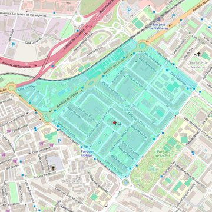

San Saturnino
- Arciprestazgo
- Alcorcón
- Población
- Alcorcón
- Dirección postal
- Pza. Príncipes de España, 1
- Código postal
- 28924
- Extensión
- 0,47 km² (47 ha)
- Teléfono
- 916 646 213
- Correo electrónico
- sansaturnino-alcorcon@diocesisgetafe.es
- Información demográfica
- De la parroquia · De la población (Alcorcón) · Del arciprestazgo (Alcorcón)
- Resumen para imprimir
- La parroquia en una hoja (A4)


Descargar mapaLímites según decreto
"Partiendo del punto de confluencia de la avenida Lisboa con la calle Carballino, arrancan por el eje de la calle Carballino (en dirección sureste); siguen por el eje de la avenida Alcalde José Aranda (en dirección suroeste), por el eje de la avenida Leganés (en dirección noroeste), por el eje de la avenida Móstoles (en dirección noreste), por el eje de las vías del ferrocarril Madrid-Móstoles (C-5, en dirección noreste), por una línea recta imaginaria (en dirección sureste) hasta la confluencia de la avenida Lisboa con la calle Carballino, punto de partida." (Decreto de actualización de límites, 21-6-2005. B.O. de julio-agosto 2005, pág. 789)
¿Algún dato de esta parroquia es incorrecto o ha cambiado? Comuníquenoslo.